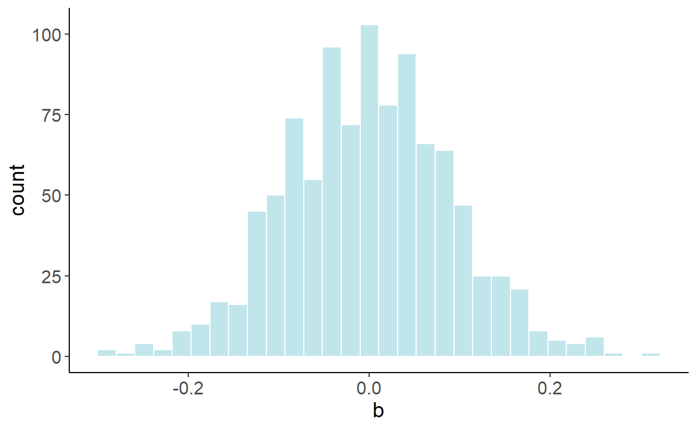
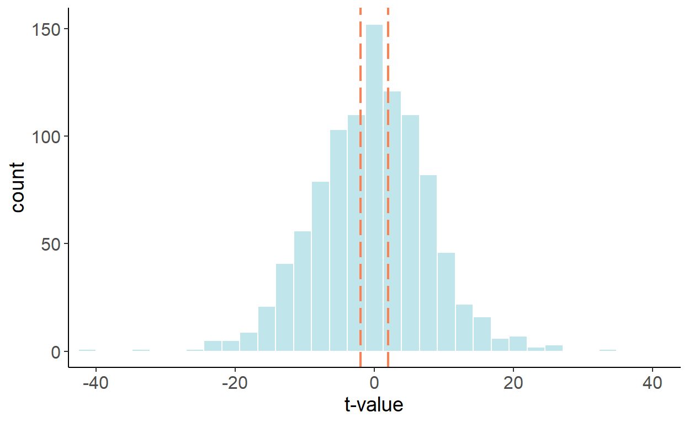

4.2 Spurious Relationships
Nothing about trending time series necessarily violates the classical linear regression model assumptions. The issue may arise, however, if an unobserved trending variable is simultaneously correlated with the dependent variable as well as one of the independent variables in a time series regression. In such case, we may find a (statistically significant) relationship between two or more unrelated economic variables simply because they are all trending. Such relationship is referred to as a spurious relationship.
4.2.1 Deterministic Trends
To begin, we will illustrate the issue using two random variables, each containing a deterministic trend. To keep things simple, we will consider linear trends, but the “findings” of this exercise can be generalized to any form of a deterministic trend (some of the key forms we discuss below).
So, consider two trending variables: \[y_t = \gamma t + \nu_t,\;~~\nu\sim N(0,\sigma_{\nu}^2),\] and \[x_t = \delta t + \upsilon_t,\;~~\upsilon\sim N(0,\sigma_{\upsilon}^2),\] where \(Cov(\nu_t,\upsilon_t) = 0\). For simplicity, we can assume \(\sigma_{\nu}^2=\sigma_{\upsilon}^2=1\). Suppose, \(\gamma\) and \(\delta\) are some positive scalars, say, \(0.3\) and \(0.5\), respectively. That is, \(y\) and \(x\) are trending in the same direction but at different rates. Below is an example of such time series:

If we were to estimate \[y_t = \alpha+\beta x_t + \varepsilon_t,\] we are likely to find the relationship between the two, in this case we will find \(\beta>0\), even though, we know, these variables are not related. To illustrate this, we will generate 1000 samples of size 120 for \(y\) and \(x\), and in each case we will estimate the parameter \(\beta\). The following graph illustrates the empirical distribution of these parameter estimates:

Luckily, we can easily “fix” the issue, by incorporating a trend in the regression: \[y_t = \alpha+\beta x_t + \eta t + \varepsilon_t.\] Once the trend is accounted for, the previously illustrated bias disappears. Using a similar simulation exercise as before, the following graph illustrates the empirical distribution of these parameter estimates:

In fact, this “fix” is equivalent to regressing a de-trended \(y\) on a de-trended \(x\). To de-trend a variable, we first run a regression: \(y_t = \gamma_0 + \gamma_1 t + \nu_t\), and then obtain the fitted values for some fixed time period (typically zero), that is: \(\tilde{y}_t = \hat{\gamma}_0+\hat{\nu}_t\), where \(\hat{\gamma}_0\) and \(\hat{\nu}_t\) are the parameter estimate and the residuals from the foregoing regression. This equiavlence is the special case of the Frisch–Waugh–Lovell (FWL) theorem, due to Frisch and Waugh (1933Frisch, Ragnar, and Frederick V Waugh. 1933. “Partial Time Regressions as Compared With Individual Trends.” Econometrica 1 (4): 387–401.) and Lovell (1963Lovell, Michael C. 1963. “Seasonal Adjustment of Economic Time Series and Multiple Regression Analysis.” Journal of the American Statistical Association 58 (304): 993–1010.).
4.2.2 Stochastic Trends
A time series may also follow a stochastic trend. A random walk process, \(y_t=y_{t-1}+\zeta_t\), represents a stochastic trend.
As it turns out, a spurious relationship can be detected between two stochastic trend processes. Suppose, in addition to the aforementioned random walk process, we have another random walk, \(x_t=x_{t-1}+\xi_t\). As before, to keep things simple, suppose \(\zeta\sim N(0,1)\) and \(\xi\sim N(0,1)\), and \(Cov(\zeta_t,\xi_t)=0\). The two variables, obviously, are not related. And yet, if we regress one on another, we are likely to reject the null more frequently than we should. The following graph illustrates the empirical distribution of t statistics:

The previous ‘fix’, which involved adding a trend in the regression, doesn’t quite work here, as observed in the following histogram. 
But there is a fix to the issue, and that involves first-differencing both series and regressing \(\Delta y_t\) on \(\Delta x_t\), which resolves the issue:
